Menu refeito · rodada 7 · o letreiro
19/10/2026. ← rodada 6 · As suas respostas: a condução numa linha só ✓, a resolução no seu browser ✓, eu gero as bases do letreiro, o Leviatã em loop. E os pedidos: a queima dos retrofoguetes mais longa, o letreiro descendo mais, e dois olhos no W.
Quatro bases para o letreiro
As quatro partem das letras exatas da Silkscreen do jogo, então a grafia é certa e o W continua sendo a cabeça do alien. Cada pixel da fonte vira 4×4 pixels do letreiro, e na tela de 1536 cada pixel do letreiro ocupa 2 px: o tamanho do título de hoje. Cada base tem três estados: apagada (a descida), acesa, e acesa com os olhos.
Os arquivos em 1× (o pixel do letreiro, para você trabalhar por cima) estão em rodada7/bases/*-1x.png, nas quatro versões: apagado, apagado com olhos, aceso e aceso com olhos.
B · Neon recomendo
Tubos de vidro correndo pelo contorno de cada letra, com o núcleo branco e o ciano do jogo, e o brilho vazando no ar. O W vira o contorno de uma cabeça, e os olhos vermelhos ficam dentro dela. É literalmente um letreiro que acende, e a piscada das janelas da cidade vira a do neon pegando. Apagado, os tubos são vidro cinza.
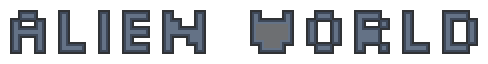
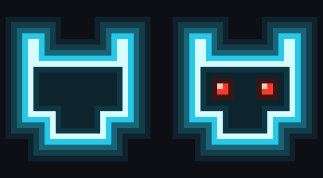
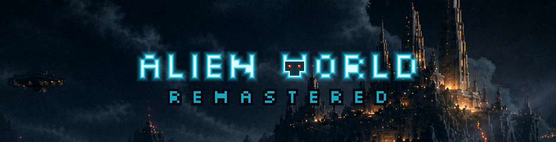
A · Casco da colônia
Metal escuro com o aro frio das silhuetas da cidade, juntas de painel, e janelas âmbar que acendem como as da colônia. O W não tem janelas, porque é o rosto. É a mais integrada à pintura, e por isso a que menos se destaca dela.
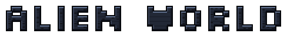
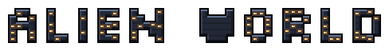
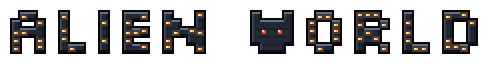
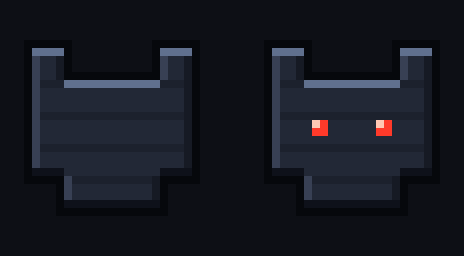
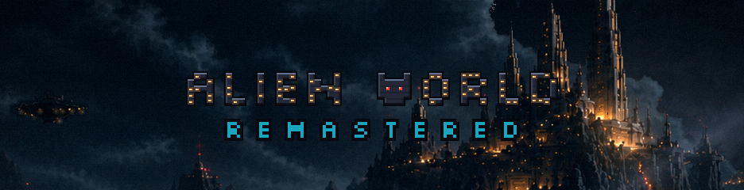
C · Placa vazada
Uma placa de metal chanfrado e aparafusado, com as letras recortadas; acesa, a luz âmbar atravessa os recortes e escorre na borda de baixo. Tem leitura forte e cara de sinalização da colônia. O custo é o retângulo escuro cobrindo mais céu.
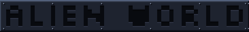
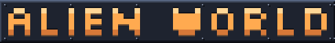
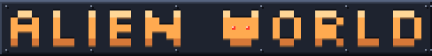
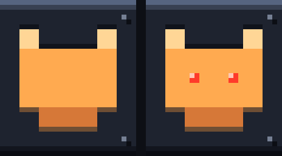
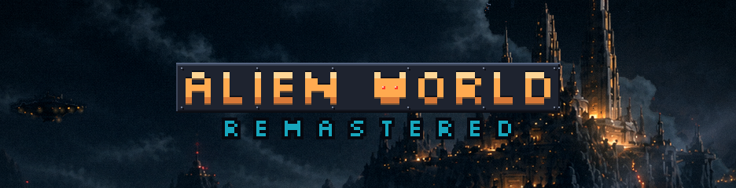
D · Ciano lapidado
O ciano de hoje, lapidado: uma faceta clara em cima, o fundo mais escuro, contorno e sombra. Apagado, é a mesma letra em ardósia. É a mais próxima do título atual, e a mais segura.
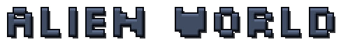
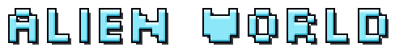
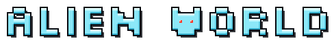
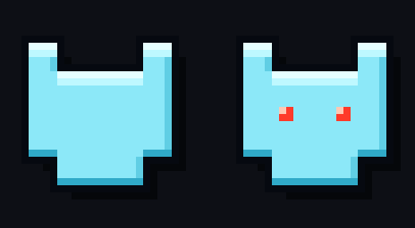
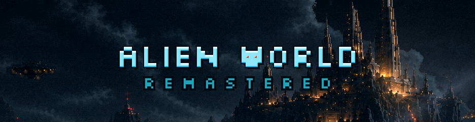
A abertura, com o neon
| 3,5 s | O letreiro entra pelo alto, apagado, já freando: os três retrofoguetes queimam o caminho todo. |
| 3,5 – 5,7 s | A queima longa, forte e constante, aliviando só no fim. Enquanto isso ele deriva para o lado e os jatos laterais corrigem. |
| 5,7 – 6,4 s | Para um pouco além do ponto; um último sopro de baixo o devolve, um de cima o segura, e ele firma. |
| 6,0 s | A lista desce em formação. |
| 7,6 s | O neon pega letra por letra, piscando; depois o REMASTERED. |
| ~9,2 s | Por último, os olhos do W acendem. |
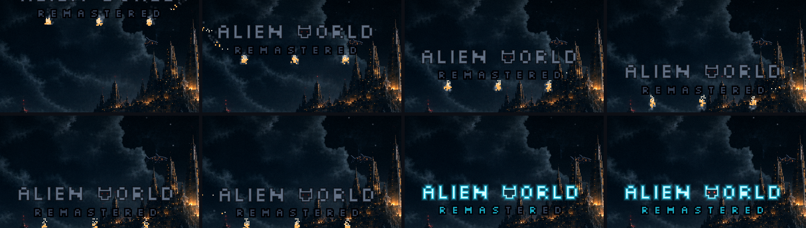
Mais baixo: o letreiro desceu mais 8 px de jogo, para cerca de 27% da altura da tela.
O Leviatã em loop: ele sai pela direita (~40 s), o céu fica vazio por 6 s, e ele volta a sair da nuvem, sem corte e sem recomeço. Não aparece nestes 18 s.
Para decidir sua vez
- Qual base você leva para trabalhar por cima (ou qual mistura)? E com ou sem os olhos?
- O REMASTERED entra no letreiro ou continua como texto embaixo (como no vídeo)?
- A queima ficou como você imaginou?